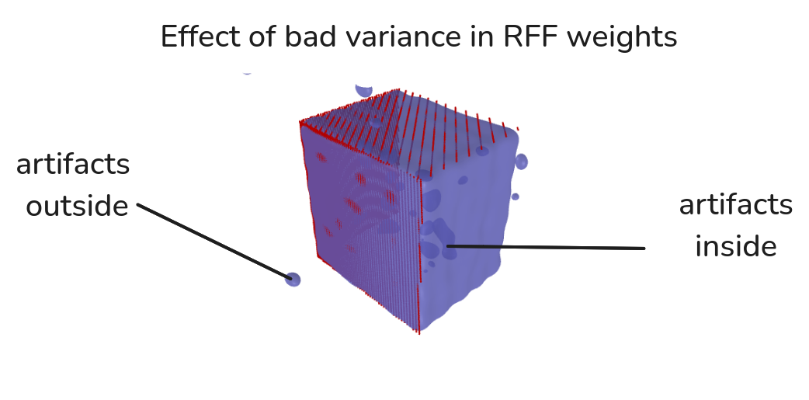

<< Back
Introduction
Previous action items:
- Create GMM Prior for RFF
- Analyze SVGD vs EM Algorithm
- Visualizations for:
- Weights used to train GMM
- Multiple eigenvectors
- Uncertainty for RFF
- Formulate learning a feature representation
Main takeaways from this week:
- Hinge points and RFF have similar quality of reconstructions; there
is no obvious benefit from switching from one to the other
- Dimension of the feature representation (at least for hinge points
and RFF) is a limiting factor in reconstruction quality (bigger is
better)
- SVGD is promising, but I think it can still be improved (i.e. poorly
conditioned prior information)
- There are a few decisions to be made about the direction of this
work
Visualizing RFF BHM
Feature Dimension
Random Fourier Features:

- EM Algorithm
- Trained on partial view
- \sigma denotes the variance of the
RFF sampled weights
Hinge Points:
- Didn’t spend much time tuning this, just wanted to generate a figure
real quick
Uncertainty Plots
- EM algorithm
- Uncertainty is not captured in a good way; I wonder if SVGD will
provide better measurements/figures
- Uncertainty is measured by entropy.
- Not much hyperparameter tuning performed
- Hilbert maps trained with SGD
- Weight dims were 2049 for RFF and 2198 for Hinged
- Training weights for RFF took ~17.3 seconds and Hinged took ~23.9
seconds on CPU (will be faster if done on GPU)
- used sigma=50.0 for RFF and gamma=1000 for Hinged (Gaussian)
- used a sampling method biased towards surface of box
- corners/edges are smoothed
Idea: Halfway through, find mesh difference and
sample directly/more from those places
Note: If the sampled RFF weights are too big, there
are weird artifacts:

Here is an example of a smaller dimension:

- 512 dimensional weight space
Takeaway: the hinge point and RFF representations
both reconstruct with a similar fidelity, perhaps related to what [1] proposes.
Takeaway: The most important factor in
reconstruction quality; besides bandwidth/scale of kernel, is the amount
of features that there are to grasp onto. Higher dimensional feature
space ==> better quality reconstruction. It also means longer
optimization time.
GMM Prior
The Prior Generation
Reconstruction of Boxes:

- 513-dim weight space
- EM algorithm
- GMM box prior
The Eigenvector
Visualization
- Turns out I just need to scale the eigenvectors up a little bit
SVGD vs EM Algorithm
Overview
Stein Variational Gradient Descent: Method described
in [2].
EM Algorithm with GMM Prior: Breaks the original EM
algorithm into components as explained in a previous write-up
SVGD w/ GMM Prior Revisited

- Did some tuning of hyperparameters
- Used GMM with 512 dim space
- Potential Problem: if Covariance matrices of GMM
components are ill-conditioned (which they are), then wouldn’t the
objective be ill-conditioned and bad for gradient descent?
- In the above figure, there is still a difference in shape in the
two, meaning that SVGD is able to encode some diversity.
Note: GMM able to use 512-dim feature space suggests it may
be possible to use w/ DeepSDF type model with 512 object code
embedding.
Thinking
About Learning, Features, and Generating Priors
Training a Feature
Representation
Setup: The current Hilbert Maps model uses a map of
the form: m(x) = \sigma(w^\top \phi(x)),
where \phi is a predetermined
feature transform. We would like to figure out a way to learn
such a \phi. This would constitute
parameterizing \phi by some parameters,
\theta such that we define a set of
potential \phi_\theta transforms, then
have some training procedure to learn \theta^*. We will assume we have some dataset
such as Shapenet [3] and we can draw query samples
around each mesh.
Potential Training Procedure 1: We can train a
weight encoder and a point feature transform simultaneously, then throw
away the encoder during inference (I am envisioning something similar to
the style modulator in [4]). Thus, we would have a point
cloud to weight encoder, \tilde{w}(o),
and a feature tranform \phi_\theta(x).
Training: Consider we have an object mesh, the procedure
would be as follows: (1) sample random points on the surface of the
mesh, denoted o and query points and
labels, X, y; (2) predict the weights
for the object with weight encoder; (3) feature transform the query
points; (4) predict the occupancy at query points; (5) apply loss (and
regularization): w \gets \tilde w(o)
\hat y \gets \sigma(w^\top \phi_\theta(X))
\text{loss} \gets \text{NLL}(\hat y,
y) + \lambda R
Then, we would perform SGD updates to both the feature
transform parameters, \theta, and the
weight encoder, \tilde w.
Idea: The regularization term R could be used to ensure that weights follow
a standard normal
Inference: During inference, we would perform
optimization-based reconstruction for w. This means we would “throw out” our weight
encoder \tilde w
Potential Training Procedure 2: We could also train
a feature transform in such a way that you don’t need a weight encoder.
This would be done in a similar way to DeepSDF [5]. In this setup, we would only
learn the feature transform \phi_\theta.
Training: Consider we have an object mesh, we would do the
following: (1) sample query points and labels, X, y; (2) load the previous weight
(stored on disk), w for the mesh (or
initialize) (3) feature transform query points; (4) predict the
occupancy; (5) apply loss; (6) after sgd step, save the updated
weight back to disk: w \gets \text{Load} (i)
\hat y \gets \sigma(w^\top
\phi_\theta(X)) \text{loss} \gets
\text{NLL}(\hat y, y) + \lambda R
\text{Save} (w, i)
Regularization: If we regularize to the standard normal
distribution for a batch of weights, then during inference, that could
be our prior: R = \mathbb{KL}(\{w_1, ...,
w_b\} \| \mathcal N(0, \sigma I)) (This could follow stein or
any other way to approximate or compute this)
Inference: The inference procedure would be the same as
above; there is no weight encoder.
Prior Generation: In order to do Bayesian inference
to recover w we may still want some way
to construct a prior; In the first proposed training procedure we could
do this two ways:
- For a bunch of shapes, calculate \tilde w
(o), then fit a GMM to it (Potentially, this could be done along
side the training.)
- Use a regularization term R such
that it forces w’s to follow a certain
distribution and use that as a prior (probably standard normal).
Other Thoughts
Fit GMM to Shapenet: Potentially, we could fit a GMM
like the one with boxes above to Shapenet meshes
SVGD + DeepSDF: What if we take DeepSDF, then run
SVGD through it to do inference in the latent space?
Hinge Points as input to NN: What if we do the hinge
point transformation, then feed it into a neural network?
Question: Is just “fine-tuning” the last layer
enough? i.e. does having the final combination of query point and object
weight/embedding be linear give the model enough expressivity? What
should the final layer dimensions be?
Potential Paper Pitch
Motivation:
- Accurate 3D reconstructions are necessary for many manipulation
tasks such as motion planning in clutter
- The problem of 3D reconstruction from a partial view is ill-posed,
meaning for a given observation, there are multiple possible/valid
reconstructions.
- Because robots need to interact with the real world, with often
noisy sensors, robustness is also necessary for such 3D reconstruction
methods
Method:
- Learn a feature transform from the ShapeNet dataset
- Use hinge point as positional encoding?
- Try to project to a relatively small dimensional embedding: 512?
256? 128?
- Use “Potential Training Procedure 1”
- Use regularization to enforce weights are normally distributed?
- Encourage diversity in reconstructions using SVGD during inference
Experiments:
- Real world reconstructions from Kinect or RealSense camera
- Simulated/Procedural scenes
- Maybe: connect to motion planner? grasp in clutter?
- Ablations
- Compare with: PointSDF, V-PRISM
Questions:
- How to separate from other deep learning techniques?
- Probably with: diversity, robustness, etc. (Note: DeepSDF was shown
in an example to be fairly robust to noisy pointclouds due to
optimization-based reconstruction)
Is Scale the Answer?
- Even with the smallest neural implicit representations, like in
[6],
networks are still like 4x128 hidden layers, meaning there are
>>10k weights being trained. Even with the max feature transform
shown above for a box, it is still only ~4k weights.
- Could it be possible to just “scale” up the feature space to like
~10k, then project down into a smaller number of dimensions?
- It would make sense if the reconstruction quality could get better
with more weights
- The only problem with a high dimensional weight space is that it
makes optimization-based reconstruction harder (slower + kernel for SVGD
suffers from curse of dimensionality)
- Idea: PCA once you have fit a bunch of high dimensional
weights, then compute a GMM Prior.
Other
V-PRISM Feedback Document
Looking Forward
Next week I want to pick one approach and go with it:
- Learning a feature transform
- Scaling up GMM to have lots of dimensions
- SVGD through DeepSDF
I would like to move things to use ShapeNet with whichever we decide
to do.
References
[1]
J.
Zheng, S. Ramasinghe, X. Li, and S. Lucey, “Trading positional
complexity vs. Deepness in coordinate networks,” Proceedings
of the European Conference on Computer Vision (ECCV), 2022.
[2]
Q.
Liu and D. Wang, “Stein variational gradient descent: A general
purpose bayesian inference algorithm,” Advances in neural
information processing systems, vol. 29, 2016.
[3]
A.
X. Chang, T. Funkhouser, L. Guibas, P. Hanrahan, Q. Huang, Z. Li, S.
Savarese, M. Savva, S. Song, H. Su, and others, “Shapenet: An
information-rich 3d model repository,” arXiv preprint
arXiv:1512.03012, 2015.
[4]
W.
Khademi and F. Li, “Diverse shape completion via style modulated
generative adversarial networks,” Advances in Neural
Information Processing Systems, vol. 36, 2024.
[5]
J.
J. Park, P. Florence, J. Straub, R. Newcombe, and S. Lovegrove,
“Deepsdf: Learning continuous signed distance functions for shape
representation,” in Proceedings of the IEEE/CVF conference on
computer vision and pattern recognition, 2019, pp. 165–174.
[6]
A.
Kundu, K. Genova, X. Yin, A. Fathi, C. Pantofaru, L. J. Guibas, A.
Tagliasacchi, F. Dellaert, and T. Funkhouser, “Panoptic neural
fields: A semantic object-aware neural scene representation,” in
Proceedings of the IEEE/CVF conference on computer vision and
pattern recognition, 2022, pp. 12871–12881.